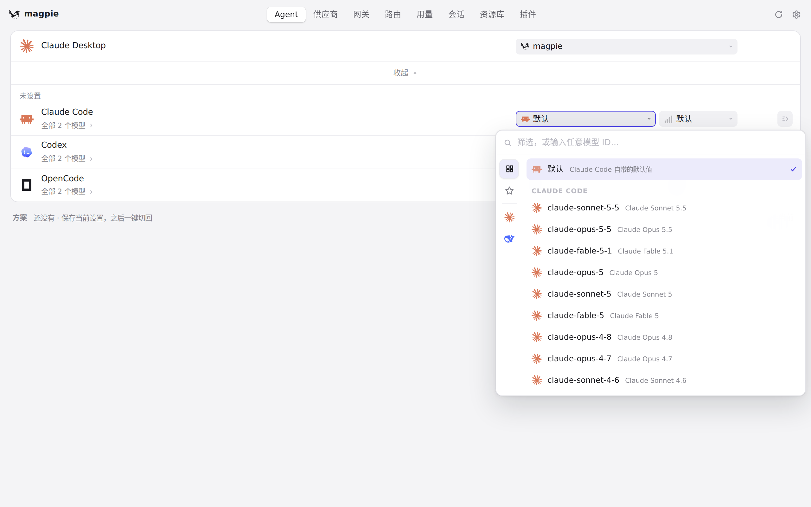
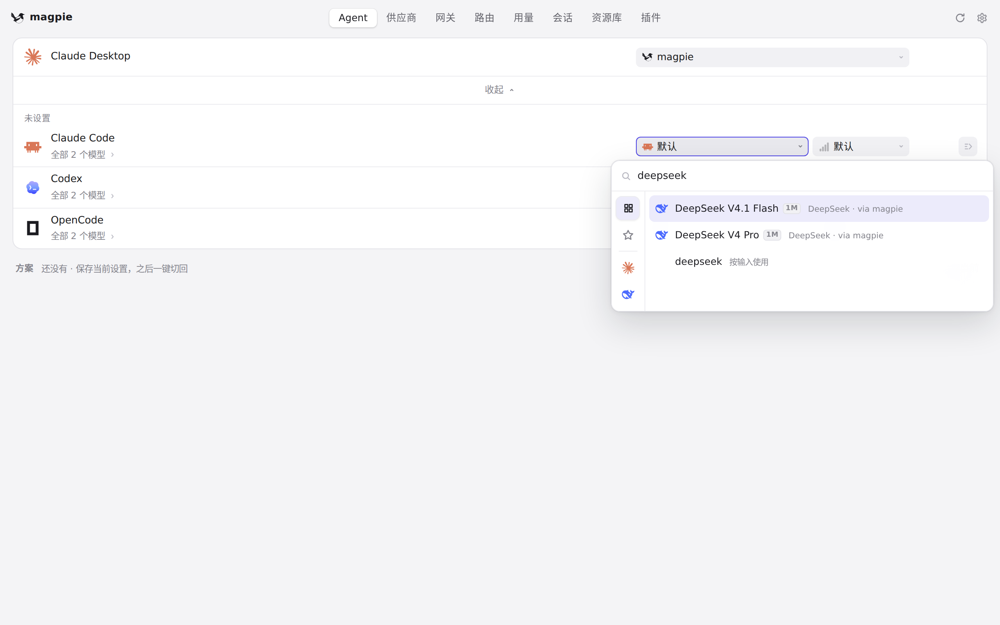
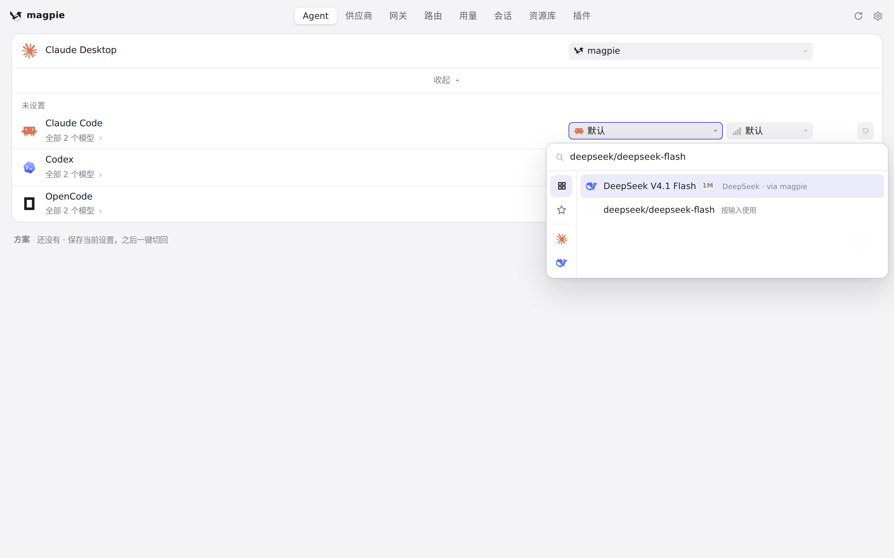
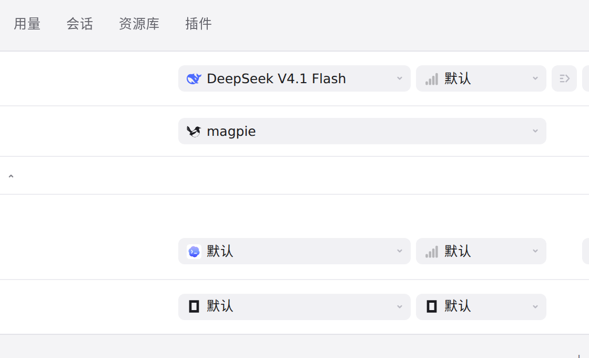

#518 界面预览
commit 3172db8 · 回到 PR · 这个 diff 改的是 Claude Code 模型下拉（#496 的折叠）的几处行为：折叠行移到 Claude Code 自己那组模型的末尾、展开项紧随其后，不再出现第二个 Claude Code 标题；折叠行按下不再抢走焦点，点完方向键、回车、Esc 照常；搜索框有内容时不折叠、输入的完整模型 ID 回车即可选中；带日期的型号被收藏而别名没被收藏时保留带日期那一行；另外 WSL 发行版里的 Claude Code 不再折叠。
红线是鼠标走过的轨迹，红色圆环是一次点击；底部文字是这一步在做什么。空格暂停，← → 逐段查看。

Claude Code 的模型下拉 · Claude Code 的模型列表

Claude Code 的模型下拉 · 输入关键词后的模型列表

输入完整模型 ID 后回车 · 输入完整模型 ID 后的模型列表

输入完整模型 ID 后回车 · 回车之后 Claude Code 行上的模型字段